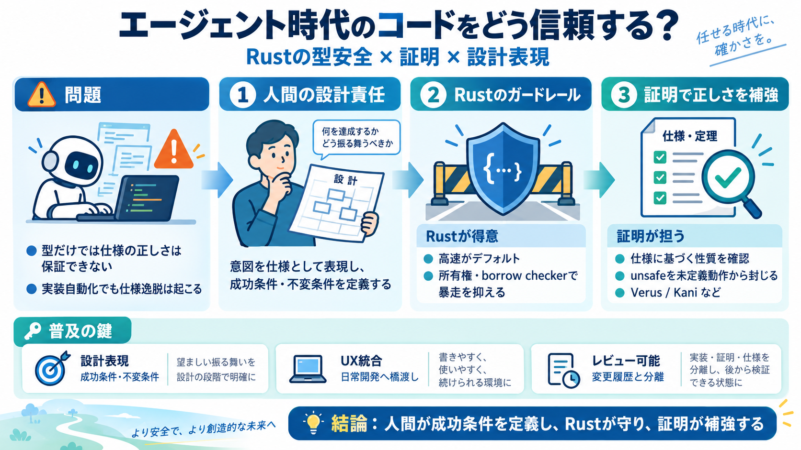

Best AI Models for Rust Coding (2026): SWE-bench Multilingual Ranked · CodingFleet Blog
| Data structures / algorithms | LiveCodeBench | Competitive programming, algorithmic design | DeepSeek V4 Pro Max | 93.…

| Data structures / algorithms | LiveCodeBench | Competitive programming, algorithmic design | DeepSeek V4 Pro Max | 93.…
Does every unsafe block have a clear justification and documented invariants? Is the scope of unsafe minimized? Is the…
More Overview Repositories Projects Packages Stars ## Popular repositories Loading 1. cxx cxx Public Safe …
Security, secrets, policy, traces, evaluation, and deployment. Explore the complete framework architecture AI agent fr…
Oct 7th 2026 10:25am, by Adrian Bridgwater What's up, Docsy? Google’s docs project joins the Linux Foundation as AI a…